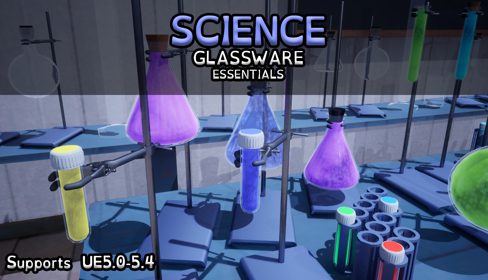
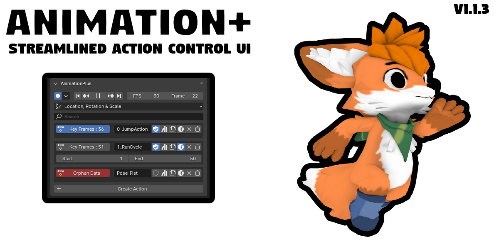
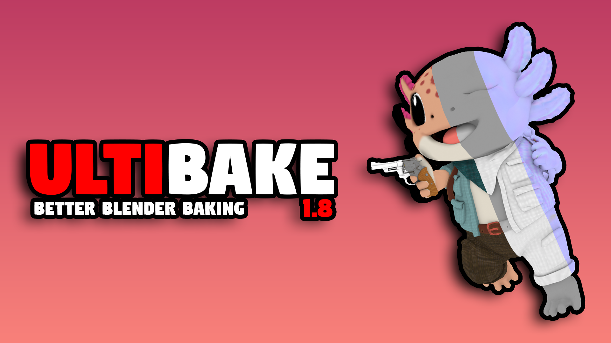

Science Glassware Essentials | UE5 | 2024
Useful assets for potions and flasks

Animation+ | Python&Blender | 2024
Tool for animating using Blender

Ultibake | Python&Blender | 2024
Tool for baking using Blender

SimplyCCTV | Assets&Blueprint | 2023
All-in-one camera system for UE4-5

Ultitextures | Assets&Blueprint | 2023
All-in-one material creation essentials for UE4-5

BlenderBatchCompressor | Python&Blender | 2023
Tool to batch compress .blend files

SmdAnimationScaler | Python | 2023
Needed to create tool that fixes animations in batch for a technique that scales player models

Batch Image processing | Python | 2023
Needed a way to compress a lot of files and have them be a specific aspect ratio, so I made this tool.

Box projection node group | Blender | 2023
A non trivial Blender problem where I had to make this node setup to bake textures from procedural materials which need box projection coordinates instead of UV coordinates

UltiTools | Blender Python | 2023
A commercial product that I made for Improving various features in Blender

UltiTools | Blender Python | 2023
A tool created out of frustration with Substance Painter. For some reason Abobe thought it was a good idea to separate each unique mesh into its own texture map. A nightmare for models consisting of more than two pieces. This program not only merges these separate textures together, but allows for channel packing as well. It is currently private, might release it or sell it at some point.

Source Map Stats | Python | 2021
I decided to take up something a bit harder, so I made a tool that can track map performance on a specific gamemode and or game